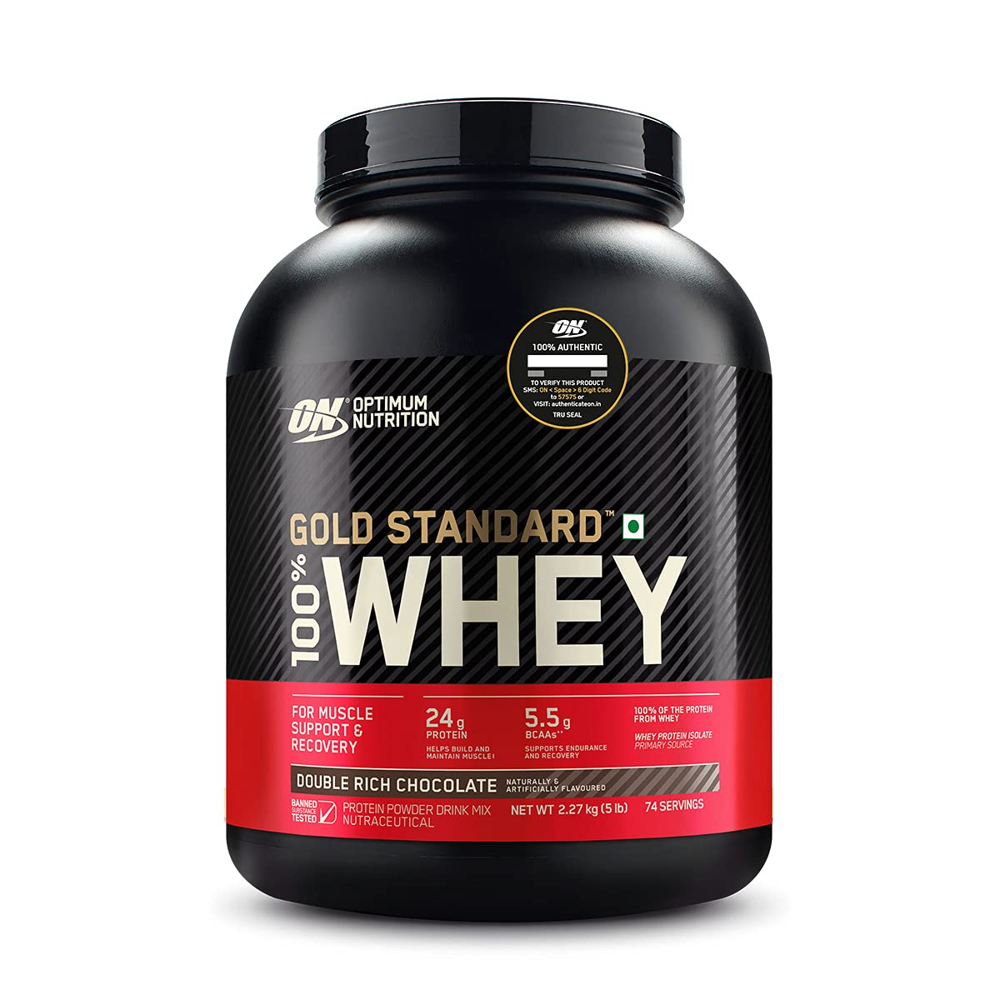
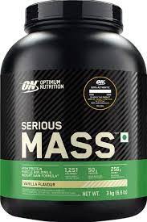
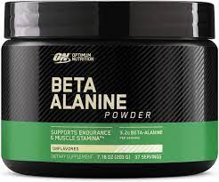
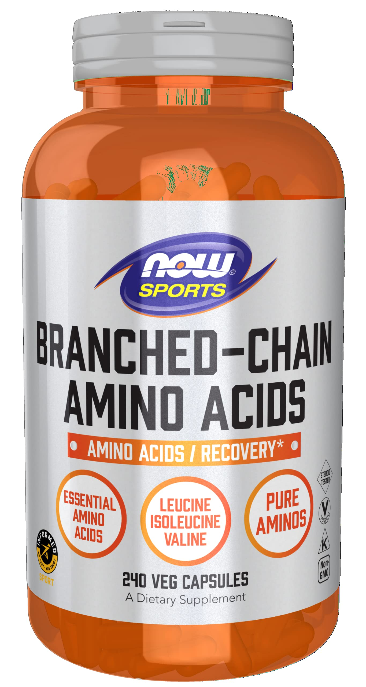

Creatine is a molecule that’s produced naturally in your body. It provides energy for your muscles and other tissues.
However, taking it as a dietary supplement can increase muscle creatine content by up to 40%Trusted Source beyond its normal levels.
This affects your muscle cells and exercise performance, promoting muscle gain. In fact, a large amount of researchTrusted Source shows creatine improves muscle strength.
Protein supplements
Getting enough protein is critical for gaining muscle.
Specifically, to gain muscle, you need to consume more protein than your body breaks down through natural processes.
While it’s possible to get all the protein you need from protein-rich foods, some people may struggle to do so.
If this sounds like you, you may want to consider taking a protein supplement.
There are many different protein supplements available, but some of the most popular are whey, casein, and soy protein. Other supplements contain protein isolated from eggs, split peas, rice, and hemp seeds.

Weight gainers
Weight gainers are supplements designed to conveniently help you get more calories and protein. They’re typically used by individuals who struggle to gain muscle, even when consuming large amounts of calories and lifting weights.
Although the calorie contents of weight gainer supplements vary, it’s not uncommon for some to contain over 1,000 calories per serving.
Many people think these calories come from protein since it’s so important for muscle building. However, most of the calories actually come from carbs

Beta-alanine
Beta-alanine is an amino acid that reduces fatigue and may improve exercise performanceTrusted Source.
Additionally, beta-alanine may help increase muscle mass if you are following an exercise program.
One 2011 studyTrusted Source showed that taking 4 g of beta-alanine per day for 8 weeks increased lean body mass more than a placebo in college wrestlers and football players.

Branched-chain amino acids
Branched-chain amino acids (BCAAs) consist of three individual amino acids: leucine, isoleucine, and valine.
They are found in most protein sources, particularly those of animal origin like meat, poultry, eggs, dairy, and fish.
BCAAs are critically important for muscle growth and make up around 35%Trusted Source of the amino acids in your muscles.
Just about everyone consumes BCAAs from food every day, but it’s also very popular to take BCAAs as a supplement.

Beta-hydroxy beta-methylbutyrate
Beta-hydroxy beta-methylbutyrate (HMB) is a molecule that’s produced when your body processes the amino acid leucine.
HMB is responsible for some of the beneficial effects of protein and leucine in the diet.
It may be especially important for reducing the breakdown of muscle proteins.